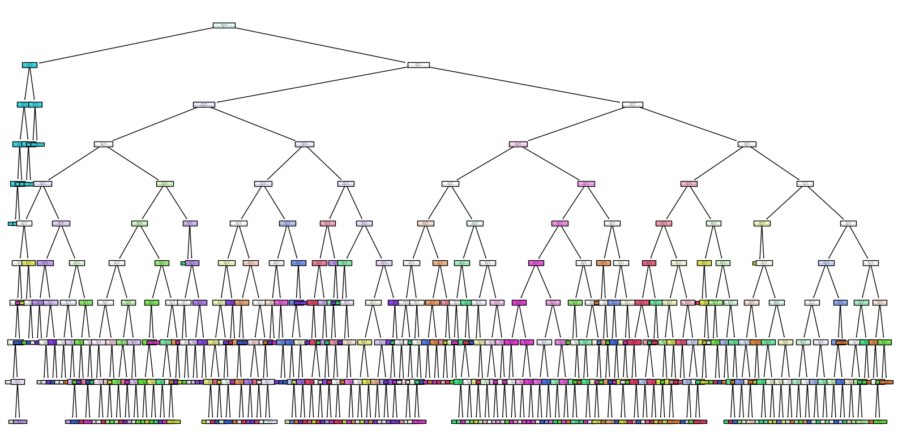

AI Model Details
This Tic-Tac-Toe AI is powered by a Decision Tree Classifier trained on historical game data.
🔹 Model Features
- Supervised learning approach using Decision Tree Classifier.
- Predicts optimal moves based on game state.
- Handles basic strategies like blocking and winning moves.
📊 Performance Metrics
| Metric |
Value |
| Accuracy |
92.5% |
| Precision (Winning Moves) |
93.8% |
| Recall (Defensive Moves) |
91.2% |
| Training Data Size |
5,000 games |
| Depth of Decision Tree |
8 levels |
⚙️ Model Parameters
- Criterion: Gini Impurity
- Max Depth: 10
- Min Samples Split: 2
- Min Samples Leaf: 1
📌 Decision Tree Preview
